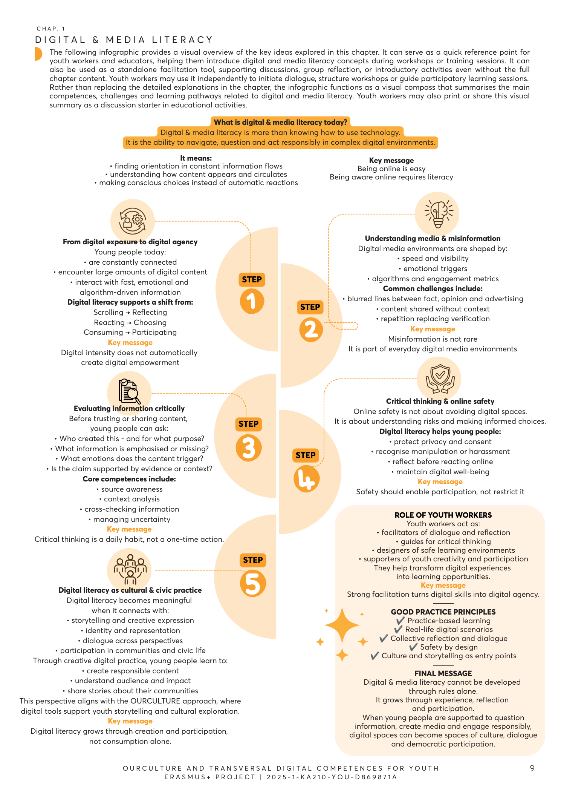
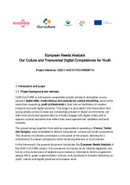
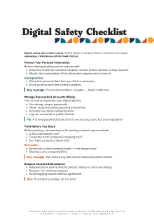

I N F O G R A P H I C S U M M A R Y

Visual summary of this chapter — click to enlarge or download.
Download infographic (PDF)Introduction
This chapter introduces digital and media literacy as a foundational competence for young people navigating today’s complex digital environments. It explores how information is produced, circulated and consumed, and how young people can develop the critical orientation, ethical awareness and safety skills required to participate responsibly in digital spaces. Designed as a practical guide for youth workers, the chapter connects conceptual understanding with concrete learning tools, participatory activities and real-life examples from youth work practice. By combining theory and practice, it supports educators in helping young people move from passive media consumption toward critical awareness and responsible digital participation. It also promotes responsible and frugal digital practices, encouraging young people to produce and share content consciously, avoid unnecessary digital accumulation and engage online with greater purpose and care.
Understanding digital literacy and media literacy
Although the terms digital literacy and media literacy are often used together, they refer to slightly different competences. Digital literacy generally refers to the ability to use digital technologies effectively and responsibly. It includes skills such as navigating online platforms, understanding how digital tools work, protecting personal data and interacting safely in digital environments. Media literacy, on the other hand, focuses more specifically on understanding and critically analysing media content. It involves recognising how information is produced, identifying bias or manipulation, evaluating sources and understanding how media messages influence opinions and perceptions. In practice, these competences are closely interconnected. Young people need both digital skills and critical media understanding in order to navigate contemporary information environments responsibly.
DigComp 3.0 connection
This chapter mainly supports three areas of DigComp 3.0:
- Information search, evaluation and management
- Communication and collaboration
- Safety, wellbeing and responsible use
Learning objectives
By the end of this chapter, youth workers will be able to:
- understand digital and media literacy as more than a technical skill, emphasising orientation, critical thinking and responsibility
- support young people in recognising misinformation, manipulation and algorithmic influence
- facilitate safe, ethical and reflective digital participation
- apply practical tools and activities that strengthen critical media engagement
- use case studies and examples to connect theory with youth work practice.
Sections
- Section 1 | Digital environments, media consumption & misinformation
- Section 2 | Key competences
- Section 3 | Practical tools & activities
- Section 4 | Case studies & best practices
Section 1 · Digital environments, media consumption & misinformation
Conceptual framework
We wake up with screens, learn through screens, communicate through screens and increasingly understand the world through digital interfaces. News, opinions, images and narratives circulate continuously, often without clear boundaries between fact and interpretation, information and entertainment, or public and private communication. In such an environment, the central challenge is no longer access to information but orientation within it. Young people are surrounded by a constant flow of content and are frequently required to decide what to trust, what to share and how to respond. In everyday digital life, this situation becomes visible in simple moments: a viral TikTok trend spreads across feeds within hours, a screenshot of a message circulates rapidly through WhatsApp groups, or a platform repeatedly recommends similar videos based on previous interactions. These experiences illustrate how digital environments shape attention, influence perception and guide behaviour. Digital literacy emerges precisely at this intersection of opportunity and risk. While digital spaces offer unprecedented possibilities for participation, expression and connection, they also expose users to misinformation, manipulation and invisible algorithmic structures. Digital literacy therefore becomes a fundamental competence for navigating contemporary social, cultural and civic life.
1.1.What is digital literacy today?
Digital literacy today begins with a simple reality: the digital world is no longer a place we occasionally visit; it is a space in which we continuously live. Many young people begin their day by checking a screen and end it the same way. Over time, this constant presence becomes almost invisible, yet it profoundly shapes how young people learn, communicate, form opinions and build relationships. For this reason, digital literacy cannot be defined only as “using technology well”. Knowing how to open an application, post a video or navigate a platform represents only the surface level of digital competence. The deeper challenge lies in recognising how digital environments influence attention, emotions, judgement and social interaction.
Digital literacy therefore involves orientation: the ability to find direction within a dense and rapidly changing information landscape. Online information rarely arrives calmly or sequentially. Instead, it appears as a continuous stream of headlines, images, short videos, comments and notifications, many of which are designed to trigger immediate emotional reactions. In such conditions, the main risk is not only the presence of false information but the disappearance of reflection. When reactions become automatic, critical thinking often arrives too late. Digital literacy helps restore this pause by encouraging simple habits of questioning before believing or sharing information.
Key questions include:
- Who created this content and for what purpose?
- What evidence is presented and what might be missing?
- Is the tone informative, persuasive or provocative?
- Is the information current or taken out of context?
These questions do not aim to generate suspicion, but to support responsible judgement and more thoughtful decision-making.
1.2.Perceived digital competence
Another important challenge highlighted through the project’s survey and focus group discussions with young people is the widespread perception that many young participants already “know how to use digital media”. Because young people grow up surrounded by smartphones, social media platforms and messaging applications, digital competence is often associated with familiarity and speed rather than with critical understanding. Many participants feel confident navigating platforms, posting content or interacting online, which can create the impression that additional digital literacy education is unnecessary. However, the findings from the project’s research activities suggest a different reality. While young people generally demonstrate strong operational skills, such as using apps or creating content, they often feel less confident when it comes to evaluating information, recognising misinformation, understanding algorithmic influence or identifying manipulated media.
These insights emerged from the project’s survey and focus group discussions conducted with young participants and youth workers across partner countries. The results highlight an important gap between digital usage and critical digital literacy. The full survey findings and qualitative insights from the focus groups are available in the project research report:

European needs analysisThis perceived competence can sometimes lead to overconfidence. When young people assume they already master digital environments, they may be less inclined to question sources, verify information or reflect on algorithmic influence. For youth workers, this insight is particularly important. Digital literacy education should therefore not assume that young people lack digital experience. Instead, it should help participants move from digital familiarity toward critical digital awareness, encouraging reflection on how digital environments shape information, behaviour and social interaction.
1.3.Algorithmic influence
Digital environments do not simply display information; they organise it. Algorithms act as invisible maps that guide users through content by predicting what will keep them engaged. While this system may create personalised and convenient digital experiences, it also shapes what becomes visible and what remains hidden. Repetition can feel like truth, and familiarity can be mistaken for credibility.
Over time, algorithmic filtering can create environments where:
- similar viewpoints are repeatedly reinforced
- unfamiliar perspectives become less visible
- popularity is confused with reliability
Understanding this dynamic is a central component of digital literacy.

1.4.AI-generated content and the challenge of authenticity
Recent developments in artificial intelligence have introduced new complexities into digital media environments. AI tools can now generate highly realistic images, videos, voices and texts that closely resemble authentic media. As a result, visual realism can no longer be treated as reliable evidence that a piece of content reflects a real event. A convincing video or image circulating online may be synthetic or manipulated through AI technologies. For young people navigating digital platforms, this creates new layers of uncertainty.
Distinguishing between authentic documentation and generated content requires increased attention to sources, context and verification. Discussing AI-generated media in youth work settings helps young people understand that credibility in digital environments must be examined critically rather than assumed based on visual appearance. For many young people, AI tools are already part of everyday digital practices. For example, some youth use AI applications to generate images for social media posts, create edited photos or avatars, produce short videos or modify voices for entertainment content. Others may use AI tools to write captions, messages or school-related texts. While these uses can be creative and harmless, they also illustrate how easily digital content can be generated or altered. Discussing these everyday uses helps young people better understand how authenticity, authorship and credibility can become blurred in digital environments.
1.5.Implications for youth work practice
For youth workers, addressing misinformation should go beyond warning young people about risks or presenting long lists of rules. Instead, effective practice focuses on developing practical verification habits, collective reflection and critical awareness through structured learning activities.
Within youth work settings, digital literacy activities can aim to achieve concrete and observable learning outcomes. For example, workshops and learning sessions may target the following objectives:
- enable participants to analyse at least 3 different types of digital content (news posts, videos, screenshots or memes) and discuss their credibility
- encourage young people to apply basic verification steps (source checking, reverse search, cross-referencing) before sharing information
- facilitate group discussions where participants compare different interpretations of the same digital content
- support young people in recognising algorithmic influence by analysing how recommendations or trending content appear in their own digital feeds
- strengthen awareness of AI-generated or manipulated media through guided examples and verification exercises
Youth workers can integrate these practices into workshops, digital storytelling activities or media analysis sessions. A typical youth workshop may include:
- analysing 2–3 viral social media posts and identifying possible misinformation signals
- discussing how algorithmic recommendations shape attention and opinions
- reflecting collectively on why certain types of content spread faster than others
Such exercises help transform digital literacy from abstract knowledge into practical analytical skills.
In addition, youth work methodologies can promote collaborative learning by encouraging participants to:
- question information sources together
- compare perspectives in small groups
- reflect on emotional reactions to digital content
- practise pausing before sharing information online
Through these collective processes, critical thinking becomes a shared competence developed through dialogue and experience, rather than an individual responsibility carried by each user alone.
When youth workers create spaces where questioning, reflection and discussion are encouraged, young people gradually develop the confidence and skills required to navigate complex digital environments more responsibly.
Transition to the following chapters
These competences become especially meaningful when young people apply them in real cultural and social contexts. Within the OURCULTURE framework, digital literacy is understood as a foundational competence that enables young people to explore their cultural environments, document local heritage and share their experiences through digital media. Once young people develop critical awareness of digital media, they are better equipped to explore their cultural surroundings, document local heritage and transform everyday experiences into meaningful narratives. The following chapters therefore move from understanding digital environments toward documenting culture, developing storytelling practices and supporting youth-led digital media production.
Section 2 · Key competences
2.1.Information evaluation and fact-checking
In contemporary digital environments, information evaluation is no longer an occasional skill used only in formal learning contexts. It has become a daily competence required to navigate an uninterrupted stream of news, opinions, images and messages. Young people encounter information continuously, often without actively searching for it, which makes the ability to pause, assess and decide especially important. Information evaluation begins with orientation-the capacity to understand what kind of content one is encountering and why it appears at that moment. Before determining whether something is true or false, young people need to recognise whether the content aims to inform, persuade, entertain or provoke a reaction. This first step helps shift media use from automatic consumption to conscious engagement.
Importantly, these skills are not only relevant when young people consume information. They are equally essential when young people create their own digital content-such as videos, podcasts, blog posts or social media stories. Understanding how information is framed, verified and shared enables young creators to produce responsible, trustworthy and meaningful media. In this sense, information evaluation becomes both a critical and a creative competence that supports youth-led storytelling and digital media production.
Evaluating sources and intent
A core element of information evaluation is the ability to question sources. This does not require advanced technical expertise, but rather consistent habits of inquiry. Digitally literate young people learn to ask:
- Who created this content?
- For what purpose was it produced?
- What interests or perspectives might be shaping it?
Evaluating intent is as important as evaluating accuracy. Content may be factually correct while still being misleading if it omits context, emphasises emotional reactions or serves a hidden agenda. Learning to identify tone, framing and language helps young people understand how meaning is constructed in digital media.
Evidence, context and comparison
Fact-checking is most effective when approached as an ongoing process rather than a single action. Instead of searching for absolute certainty, young people benefit from comparing information across multiple sources and perspectives. This includes:
- checking whether claims are supported by evidence
- looking for corroboration from independent sources
- identifying missing voices or unexplored viewpoints
Context plays a decisive role in this process. Images, statistics or quotes may change meaning when removed from their original context. Developing sensitivity to context helps young people recognise partial truths and avoid unintentionally spreading misleading information.
AI-generated content and verification challenges
Recent developments in artificial intelligence have introduced new challenges to information evaluation. AI technologies are now capable of generating highly realistic images, videos, voices and texts that may appear authentic even when they are artificially created. As a result, visual realism alone can no longer be treated as proof of authenticity. A convincing video, audio message or photograph circulating online may be synthetic or manipulated through AI tools. For young people navigating digital platforms, this means that verification increasingly relies on analysing sources, context and cross-checking information rather than relying solely on visual credibility. Discussing AI- generated media in youth work settings helps young people understand how digital technologies can influence perception and credibility.
Managing uncertainty and emotional triggers
Information evaluation also requires emotional awareness. Digital content often appeals to fear, outrage or urgency, encouraging immediate reactions. Fact-checking competence therefore includes the ability to recognise emotional triggers and delay judgement. Learning to say “I am not sure yet” is not a weakness but an important critical skill. By normalising uncertainty, youth workers can help young people resist the pressure to react instantly and instead value reflection and dialogue.

Fact-checking as a shared practice
Fact-checking should not be framed as an individual burden or a test of intelligence. In youth work settings, it is most effective when treated as a collective practice. Discussing information together, comparing interpretations and reflecting on different perspectives fosters confidence and mutual learning. This approach reinforces the idea that critical evaluation is not about distrusting everything, but about building informed trust through verification, comparison and openness to correction.
Useful fact-checking resources
Youth workers may also introduce participants to accessible verification tools that support responsible information evaluation:
- Snopes – fact-checking viral claims and misinformation https://www.snopes.com
- EUvsDisinfo – European initiative analysing disinformation narratives https://euvsdisinfo.eu
- Google Reverse Image Search – verifying the origin of images https://images.google.com
- TinEye – reverse image search for detecting reused or manipulated visuals https://tineye.com
These tools support critical thinking but do not replace it. The goal of digital literacy is not only to check information technically, but to develop habits of questioning, reflection and responsible sharing.
2.2.Critical thinking and online safety
Critical thinking and online safety are closely interconnected competences. In digital environments, the ability to think critically directly influences how safely young people navigate platforms, relationships and information flows. Safety is not achieved through withdrawal or restriction, but through understanding how digital spaces operate and how individual choices shape exposure and risk.
Critical thinking begins with awareness. Young people need opportunities to recognise that digital content, interactions and visibility are never neutral. Platforms are designed to capture attention, amplify emotion and reward speed rather than reflection. Without critical distance, safety risks increase-not because young people lack responsibility, but because digital environments often encourage impulsive engagement.
From risk awareness to risk navigation
Online safety is often introduced through lists of dangers such as cyberbullying, scams, privacy violations or harmful content. While awareness of these risks is important, it is not sufficient on its own. Young people also need the ability to navigate risk-making informed decisions in complex situations rather than simply following rigid rules. Critical thinking supports this shift by encouraging young people to ask:
- What is happening in this situation?
- Who is involved, and what power dynamics might be present?
- What could be the consequences of my action-or my silence?
These questions allow safety to become contextual and adaptive rather than fear-driven.
Identity, impersonation and digital trust
Another growing challenge in digital environments is identity misuse and impersonation. Online profiles, images, usernames and personal information can be copied, manipulated or falsely presented by others. In some cases, individuals may create fake accounts pretending to be someone else, while in other situations personal data or photos may be reused without consent.
Critical thinking helps young people recognise potential signs of identity misuse, such as:
- unfamiliar accounts using known names or images
- suspicious requests for personal information
- messages that imitate trusted contacts or institutions
- manipulated profiles designed to gain trust or attention
Understanding these risks helps young people develop cautious and responsible digital habits. Rather than assuming that every online identity is authentic, young people learn to verify information, question unexpected messages and protect their own digital identity. This awareness is especially important as digital technologies-including AI-generated images or voices-make identity imitation increasingly convincing. Developing critical awareness around digital identity therefore becomes an essential part of online safety education.
Understanding visibility and consequences
A central aspect of online safety is understanding visibility. Digital actions - posting, commenting, sharing or reacting - can have effects far beyond the immediate moment or intended audience. Critical thinking helps young people reflect on:
- who might see this content now or in the future
- how content could be interpreted outside its original context
- whether consent and personal boundaries are respected
This reflection supports safer participation without discouraging expression. Young people do not need to disappear from digital spaces to remain safe; they need tools to manage their presence consciously.
Emotional awareness and self-regulation
Digital interactions are often emotionally charged. Content designed to provoke anger, fear or urgency can override critical judgement and lead to unsafe decisions. Critical thinking therefore includes emotional literacy: recognising when emotions influence reactions and learning to pause before responding. For youth work practice, this means creating environments where slowing down is valued.
Choosing not to respond immediately, not to share unverified content or not to escalate online conflict is framed as an active and thoughtful decision rather than passivity.
Safety as a collective practice
Online safety is not only an individual responsibility. Critical thinking supports collective safety by encouraging young people to consider how their actions affect others. This includes:
- intervening respectfully when peers are targeted online
- supporting individuals experiencing harassment
- using reporting and blocking tools without stigma
- contributing to shared norms of respectful digital interaction
When safety is approached collectively, young people feel less isolated and more empowered to act responsibly.
The role of youth work
In youth work contexts, critical thinking and online safety should be integrated into everyday learning activities rather than taught as isolated topics. Facilitators play a key role by:
- encouraging dialogue instead of prescribing behaviour
- validating questions and uncertainty
- modelling reflective digital practices
- framing safety as part of participation rather than a restriction
This approach strengthens young people’s agency and confidence while supporting responsible digital engagement.
Section 3 · Practical tools & Activities
3.1.Digital & media literacy in practice
This section provides a set of ready-to-use, low-threshold activities that youth workers and educators can directly implement in workshops, classrooms or informal learning settings. The activities translate digital and media literacy competences-such as information evaluation, critical thinking and online safety-into hands-on, reflective and participatory learning experiences.
All activities are designed to be:
- Practice-based – learning by doing, not lecturing
- Safe-by-design – no exposure to real harm or personal risk
- Discussion-oriented – collective reflection rather than individual testing
- Adaptable – applicable across different European youth work contexts
Educators and youth workers are also encouraged to complement these activities with national digital literacy resources, educational websites or local initiatives available in their country. This helps participants connect the workshop experience with reliable learning materials they can explore independently.

3.2.Practical digital safety checklist for youth
Everyday guide for safer online participation
Purpose of the tool
This checklist supports young people in making informed, confident and responsible choices in digital environments. It focuses on everyday online situations and encourages awareness, reflection and responsible participation rather than fear or restriction. In this chapter, a short practical version of the checklist is provided to support workshop discussions and youth activities. The extended version of the checklist with detailed explanations and examples is available in the Annex Toolkit section of this guide.

The full extended checklist with detailed guidance, examples and workshop exercisesHow to use this checklist in youth work
Youth workers may use this checklist in several ways:
- as a quick discussion starter during digital literacy workshops
- as a reflection exercise at the end of an activity
- as a printed visual reminder for young participants
- as a starting point for creating group safety agreements
- as a co-creation activity where participants adapt, modify or rewrite the checklist based on their own digital experiences and needs
The goal is not to present strict rules but to encourage reflection and responsible digital habits.
Everyday guide for safer online participation
Before sharing, reacting or posting online, take a moment to pause. Small online actions can have long-term consequences for privacy, reputation and well-being.
Personal information
Passwords & account protection
Responsible sharing
Recognising online risks
Digital well-being
Final reflection

Section 4 · Case studies & Best practices
4.1. Case study 1 - Public media–led digital media literacy training
Project overview
The open-access digital media literacy courses offered by TRT Academy represent a public media–led initiative aimed at strengthening digital and media literacy in Türkiye through an accessible learning model. The trainings are designed to support safe, critical and responsible participation in digital environments and are available to a broad audience without financial or institutional barriers. Within these programmes, digital media literacy is not treated solely as a technical skill. Instead, it is approached as a multidimensional competence that combines information verification, algorithmic awareness, ethical responsibility, digital security and critical thinking. This holistic approach encourages learners to move beyond passive media consumption and engage with digital environments as responsible and reflective participants.
Objectives and learning focus
The TRT Academy courses aim to:
- strengthen critical evaluation of information in digital environments
- raise awareness of misinformation, manipulation and algorithmic influence
- promote safe and responsible digital behaviours
- support informed participation in digital society
Rather than focusing on specific platforms or tools, the programme emphasises transferable competences that remain relevant across different digital environments.
Content and methodological approach
The training combines conceptual explanations with examples drawn from everyday digital experiences. Complex topics such as misinformation, algorithms or digital security are translated into accessible language and real- life situations.
Key thematic areas include:
- Information verification: questioning sources and analysing context
- Algorithmic awareness: understanding how platforms influence visibility and attention
- Digital security: managing personal data, privacy and digital footprints
- Ethics and responsibility: consent, representation and respectful online behaviour
The pedagogical approach focuses on empowerment and informed decision- making rather than fear-based messaging.
Target group
- Young people, particularly those aged 16–30
- Teachers, youth workers and educators
- Parents and adult learners seeking to better understand digital risks and opportunities
- Individuals who actively use digital media but lack structured critical awareness
Key digital & media literacy elements
- Critical evaluation and verification of online information
- Algorithmic awareness and recognition of hidden digital influences
- Ethical responsibility in content sharing and digital interaction
- Digital security, privacy awareness and well-being
- Understanding long-term implications of digital footprints
Impact
Publicly accessible initiatives such as TRT Academy contribute to:
- expanding digital media literacy beyond formal education settings
- encouraging more reflective engagement with online information
- strengthening resilience against misinformation and manipulation
- promoting responsible digital citizenship in everyday life
Participants report increased awareness of how digital environments influence their perceptions and greater confidence in navigating online spaces responsibly.
What youth workers can take from this example
Youth workers can integrate similar approaches by combining accessible content with real-life examples and focusing on transferable skills rather than platform- specific knowledge. They can also design learning activities that connect critical thinking, digital safety and ethical awareness, helping young people apply these competences in everyday digital situations.
4.2. Case study 2- Public media & youth participation
Project overview
BBC Young Reporter is a long-standing public media initiative in the United Kingdom that combines youth participation, digital media literacy and journalistic practice. The programme enables young people to move from passive media consumption to active participation in media production, critical analysis and storytelling. Through collaboration with schools, youth organisations and community groups, the initiative provides young participants with opportunities to create journalistic content while learning how media systems operate.
Objectives and learning focus
The programme aims to:
- develop young people’s understanding of media production processes
- strengthen skills in fact-checking and source evaluation
- promote responsible and ethical storytelling
- support youth participation in public dialogue
- build confidence in expressing ideas and experiences
Content and methodological approach
BBC Young Reporter follows a learning-by-doing model, where media literacy is developed through real production experiences rather than theoretical instruction. Activities typically include:
- youth-led reporting and interviews
- digital storytelling projects
- editorial mentoring by media professionals
- fact-checking and verification processes
- group reflection on representation, tone and media ethics
This approach positions media literacy as a practical competence connected to participation, creativity and responsibility.
Target group
- Young people aged approximately 11–18 (with adapted formats for older youth)
- Young participants from diverse social, cultural and educational backgrounds
- Educators and youth workers acting as facilitators and mentors
Key digital & media literacy elements
- Information verification and responsible journalism
- Understanding media framing and narrative construction
- Ethical use of images, language and representation
- Digital safety, consent and online responsibility
- Awareness of audience, visibility and public impact
Impact
Participation in BBC Young Reporter helps young people:
- understand how media content is produced and verified
- develop confidence in expressing opinions and stories
- build critical distance from misinformation and sensational narratives
- gain visibility within a trusted public media environment
Such initiatives demonstrate how youth media production can strengthen both critical media awareness and civic participation.
What youth workers can take from this example
Youth workers can encourage media literacy through hands-on content creation, such as digital storytelling or youth reporting activities. By allowing young people to produce and reflect on their own content, facilitators can strengthen both critical awareness and confidence in expression.

4.3. Case study 3- Civil society–led media literacy initiative
Project overview
Lie Detectors is a European civil society initiative that promotes media literacy and critical thinking among young people through direct interaction with professional journalists. Operating across several European countries, the programme connects schools and youth groups with journalists who facilitate workshops on misinformation, verification and responsible media consumption. The initiative focuses on helping young people understand how journalism works, how misinformation spreads, and how to verify information in a rapidly evolving digital media landscape. By combining professional expertise with participatory learning methods, Lie Detectors provides a practical approach to media literacy education.
Objectives and learning focus
The programme aims to:
- strengthen young people’s ability to recognise misinformation and manipulation
- introduce basic fact-checking and verification techniques
- explain how journalism works and why credible information matters
- encourage critical questioning of online content
- promote responsible participation in digital information environments
Methodological approach
Lie Detectors workshops are typically delivered through interactive sessions led by trained journalists. Rather than relying on lectures, the methodology emphasises discussion, analysis and real-life examples from contemporary media environments.
Key elements of the workshops include:
- analysing viral news stories and misleading headlines
- learning how journalists verify sources and information
- discussing the role of algorithms and social media in information circulation
- exploring the difference between opinion, reporting and misinformation
- reflecting on the responsibilities of both media producers and audiences
Participants are encouraged to question information collaboratively and understand media systems as dynamic environments shaped by both technology and human decisions.
Target groups
- Students and young people aged approximately 12–18
- Teachers and youth workers facilitating media literacy activities
- Schools and youth organisations across multiple European countries
Impact
Initiatives such as Lie Detectors demonstrate how cooperation between journalism professionals and educators can strengthen young people’s media literacy skills. Participants often report:
- greater confidence in questioning online information
- improved understanding of how news is produced
- stronger awareness of misinformation strategies
- increased trust in credible information sources
By bridging journalism and education, the programme contributes to developing critical, informed and responsible media users.
What youth workers can take from this example
Youth workers can collaborate with external experts or use real-world examples to make media literacy more concrete and credible. Inviting professionals or simulating journalistic practices can help young people better understand how information is produced and verified.
4.4.Key takeaways for youth work practice
The case studies presented in this chapter demonstrate that digital and media literacy is most effective when it is embedded in real practices rather than abstract explanations. Initiatives led by public media and civil society actors show how young people can engage with media as both critical users and active creators.
Across these examples, several key approaches emerge for youth work practice:
- connecting media literacy with real-world media practices and professional standards
- encouraging dialogue, questioning and collaborative analysis instead of fixed answers
- supporting young people in becoming both critical media consumers and responsible content creators
- creating safe environments where reflection, experimentation and participation are possible
These approaches align with youth work principles that prioritise participation, creativity and critical engagement. They also connect directly with the OURCULTURE methodology, where digital literacy supports cultural exploration, storytelling and youth-led narratives. By combining critical awareness with creative expression, young people are better equipped to explore their cultural environments, document local heritage and share meaningful digital stories.
The following chapters build on this foundation, moving from media analysis toward cultural exploration, heritage documentation and youth-led digital storytelling.